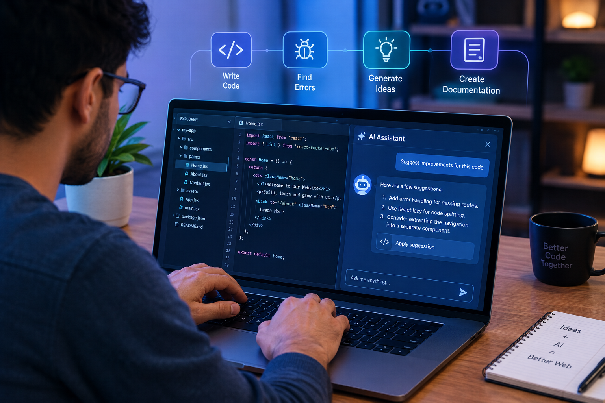
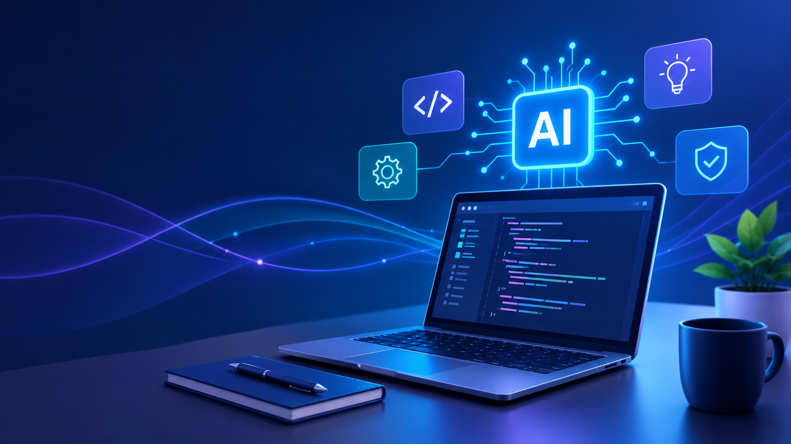

How Artificial Intelligence Is Changing Web Development
Artificial intelligence is transforming web development by helping developers write code, improve designs, automate repetitive tasks, and create more personalized user experiences. As AI tools continue to evolve, developers are finding new ways to build websites faster while maintaining quality and accessibility.
By Jakes Abraham
Introduction
Artificial intelligence has become an important part of modern web development. Developers can use AI-powered tools to assist with writing code, finding errors, generating ideas, and completing repetitive tasks. This allows them to spend more time solving problems and improving the overall user experience.
The use of AI is also changing how websites are designed and maintained. AI can help analyze user behavior, suggest improvements, generate content, and support personalized experiences. However, developers still need to review AI-generated results carefully to ensure that websites remain accurate, secure, accessible, and easy to use.
AI in Web Development
Artificial intelligence is being used in many areas of web development, from writing and reviewing code to improving website design. AI-powered development tools can suggest code, identify common errors, generate documentation, and help developers complete repetitive programming tasks more efficiently.

AI can also support the design and maintenance of websites. It can analyze user interactions, suggest interface improvements, generate content, and help identify accessibility issues. Although these tools can save time, developers remain responsible for checking the results and making sure the final website is reliable, secure, accessible, and useful.

Future of AI in Web Development
The future of AI in web development is likely to focus on smarter development tools and more automated workflows. AI may help developers build websites by generating code, testing applications, detecting security problems, and suggesting improvements. This can reduce repetitive work and allow developers to focus more on creativity, problem-solving, and user experience.
AI may also make websites more personalized and accessible. Future systems could adapt interfaces based on user needs, provide better accessibility suggestions, and help developers create experiences for a wider range of users. However, human developers will still be important because AI-generated solutions need to be reviewed for accuracy, security, accessibility, and ethical concerns.
AI Applications in Web Development
| AI Application | Purpose | Benefit | Example |
|---|---|---|---|
| Code Generation | Creates code from developer instructions | Speeds up development | Generating HTML, CSS, or JavaScript |
| Bug Detection | Identifies possible errors in code | Improves code quality | Finding JavaScript errors |
| Content Generation | Creates website content | Saves development time | Generating product descriptions |
| Personalization | Adapts content to individual users | Improves user experience | Showing personalized recommendations |